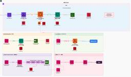

レバレジーズ データAIブログ
https://analytics.leverages.jp/
インハウスデータ組織のあたまのなか
フィード

(2025年版) レバレジーズの機械学習エンジニアの1年を振り返る
レバレジーズ データAIブログ
はじめに こんにちは、レバレジーズ テクノロジー戦略室AI/MLエンジニアリンググループの稲垣です。 私の所属するチームはいわゆる機械学習エンジニア、AIエンジニアが所属するチームで、レバレジーズの全組織横断でAIを活用したプロダクト、ツール、基盤開発を行っています。 実は、2024年に「レバレジーズの機械学習エンジニアの1年を振り返る」という記事を書いていまして、 もう2025年は終わっちゃいましたが、まだ年度内だから良いよねということで2025年版の記事を書いてみようと思います。 レバレジーズの機械学習エンジニア、AIエンジニアがどんなことをしているのか興味がある方はぜひ読んでみてください…
5日前

点を線に変えるデータサイエンスの論文紹介3選
レバレジーズ データAIブログ
データ戦略室で室長兼データサイエンティストをしている阪上です。本日は先日、組織のキックオフイベントでお話した内容を紹介したいと思います。 点を追求することによる失敗 自分は過去に短期的なKPI（ここでは会員登録とします）の改善のために分析を行い、改善するためのマーケティング施策を見つけました。そして、A/Bテストで400%の改善をし、会員登録の率を大幅に改善させました。こんなに恐ろしいくらいにユーザーに反響がある施策があるのかと当時驚くばかりでした。 しかし、登録した会員からもたらされる売上インパクトが、施策をしない場合よりも悪化してしまうという事態に数ヶ月後に気づくこととなりました。これは短…
9日前
GASをTypeScriptでローカル開発する冴えたやり方
レバレジーズ データAIブログ
はじめに こんにちは、テクノロジー戦略室の室長をしています竹下です。マネージャー業務をやっていると、スプレッドシートをGASで自動化することも多く、JavaScriptはなんだかなーと思っていました。TSKaigiの代表理事としてもTypeScriptで書きたい！と思いたちやってみました。 Googleスプレッドシートやドキュメントなどを操作出来るGoogle Apps Script(以降GAS)は、通常はブラウザエディタで開発することが多いとは思いますが、 JavaScriptのため、コード補完が貧弱 近年のAIのコードアシストが使えない バージョン管理が出来ない(gitほど便利じゃない) …
11日前
社会人2年目で学んだ仕事の進め方
レバレジーズ データAIブログ
はじめに こんにちは！データアナリストの高津です。 昨年4月に入社してから10ヶ月が経ちました。現在は、分析の要件定義から最終的なアウトプットまで、非常に「裁量の大きな環境」で仕事を任せて貰えています。 業務の自由度が高いからこそ、「タスクの抜け漏れ」や「効率的な進め方」に悩むことも少なくありません。今回は、同じように裁量の大きさに試行錯誤している方に向けて、私が実践している仕事の進め方のコツを共有します。 壁にぶつかった 直近、事業全体の意思決定に直結する大きな分析プロジェクトを担当しました。プロジェクトの概要としては、売上貢献度の高い顧客の属性を分析し、業務オペレーションの最適化を行うこと…
18日前
データ分析基盤再整備を全社展開してみた
レバレジーズ データAIブログ
こんにちは。 データ戦略室データアーキテクトグループの田代です。 本ブログでも何度か経過報告をさせていただいている「データ分析基盤再整備プロジェクト」。この度、ようやく全社規模での展開がある程度完了しました。 これまでの具体的な取り組みや、特定サービスでの先行事例については、ぜひ以下の記事や資料もあわせてご覧ください！ 見返すと壮絶なブログリレーですね。本取り組みで擦りすぎました。笑 参考記事： データ分析基盤再構築への道！～レバレジーズの挑戦～ - レバレジーズ データAIブログ データ分析基盤再整備プロジェクトの全貌 - レバレジーズ データAIブログ データ分析基盤再整備から1年：アーキ…
22日前
データアーキテクトグループとしてスキルをキャッチアップするための取り組み
レバレジーズ データAIブログ
はじめに こんにちは。 データ戦略室データアーキテクトグループの川村です。今回は25年下半期でデータアーキテクトグループで開催している勉強会の取り組み内容についてご紹介できればと思います。 勉強会開催の背景 データアーキテクトグループでは各事業部に対して担当者をたて、データ分析基盤の構築やモニタリング作成を実施しております。日常業務に追われていると、スキルアップのきっかけとなる機会が取れないという問題がありました。これを解決するために、月に1回30分でハンズオン形式で新しい技術のキャッチアップを行うことになりました。この勉強会によって、触り程度にはなりますが新しい技術を学習するきっかけにもなっ…
1ヶ月前
「精度何%ならリリースOK？」運用開始前に定める、納得感のあるLLM評価基準の作り方
レバレジーズ データAIブログ
こんにちは。データアナリティクスグループの丸山です。 現在、私たちのチームでは求職者の方々により納得感のある仕事探しを体験していただくため、レコメンドエンジンに「LLMを用いた推薦理由の説明」を付加するプロジェクトに取り組んでいます。 このような推薦理由の説明はTikTokなど転職支援サービス以外でも導入されており、サービスのKPIにポジティブな影響を与えるケースも多いことが知られています。 さて、LLMの生成テキストをプロダクトに組み込む際、避けて通れないのが「その説明は本当に妥当なのか？」という評価の問題です。特に、運用データがない段階ではLLM as a judgeなどで算出した指標がビ…
2ヶ月前
プルリクエストのレビューコメントから自分独自のレビューガイドラインを作成してみた
レバレジーズ データAIブログ
はじめに こんにちは。データ戦略室データアーキテクトグループの櫻井です。今回は自分がクエリレビューでいただいたコメントを今後に活かせるよう、自分なりにコーディング環境を整える話になります。以前の投稿『【VScode × Github Copilot】脱・目検チェック！社内コーディング規約レビュー自動化への挑戦』の内容と重複する部分もあるのですが、ご了承いただけますと幸いです。また、以前の投稿も是非読んでみてください！よろしくお願いします！ 背景 レバレジーズではGoogle CloudのサービスであるDataformを使用してデータの加工・変換プロセスを管理しています。Dataform上でクエ…
2ヶ月前
Google OR-Toolsでマッチング問題を解く
レバレジーズ データAIブログ
はじめに こんにちは！レバレジーズデータ戦略室、データサイエンティストのJacobです。 今回は、以下のような問題を考えてみましょう。 5000人の求職者と500社の企業があります。 各企業に対して、最適な候補者10名のリストを送りたいです。 企業と求職者の組み合わせに対して、0.0（マッチしない）から1.0（非常に相性が良い）までのマッチングスコアを出力するスコアリング関数（機械学習モデルなど）があるとします。 単純なアプローチは、各企業ごとに全候補者のスコアを計算し、上位10名を選ぶ方法です。しかし、この方法には「特定の優秀な候補者に推薦が集中してしまう」という欠点があります。一人の求職者…
2ヶ月前
施策効果を正しく測るためのCausalImpact入門
レバレジーズ データAIブログ
はじめに こんにちは、レバレジーズでアナリストをしている内田です。 本記事では、施策効果を正しく測定するための手法「CausalImpact」を紹介します。後半では、TVCMの効果検証を想定した分析例もお見せします。 CausalImpactとは何か？ CausalImpactとは、Googleが開発した因果推論の手法で、「もし施策を実施しなかったら、どうなっていたか」という反実仮想（Counterfactual）を推定し、実績値との差分から施策効果を測定するアプローチです。 時系列データに対してベイズ構造時系列モデル（BSTS）を適用し、施策がなかった場合の予測値を算出します。この予測値と実…
2ヶ月前
データアーキテクトがStreamlitでWebアプリ作ってみた（要件定義・設計編）
レバレジーズ データAIブログ
はじめに こんにちは。 レバレジーズデータ戦略室、データアーキテクトの浅見です。 データ分析基盤としてBigQueryを活用している企業は多いと思いますが、それに伴う「権限管理」はどのように行なっているでしょうか。 レバレジーズでは、データ戦略室以外の組織でも BigQueryを活用したデータ分析を各自が行なっています。 そのためデータ戦略室では、現場の社員に対して BigQueryのデータ閲覧権限を付与する必要がありますが、この「BigQueryの権限付与オペレーション」は、データガバナンスと業務効率の観点から課題となっていました。 データ分析基盤を構築するだけでなく、データ利用における課題…
3ヶ月前
データ分析基盤再整備から1年：アーキテクチャ導入の成果と苦労
レバレジーズ データAIブログ
はじめに こんにちは。 レバレジーズデータ戦略室、データアーキテクトグループの鵜飼です。 今回は、1年前に私が投稿した記事『データ分析基盤再整備プロジェクトの全貌』のその後についてお話をできればと思います。 データ分析基盤を再構築していく中で、前回の記事から変わった点や、新しいアーキテクチャを導入して良かったこと・大変だったこと等を共有できればと思いますので、これからデータ分析基盤の再構築を検討している方の参考になれば幸いです！ 前回の記事から変わったこと 実装をしていく中で、想定していたアーキテクチャでは要望を実現できないことが何度かあり、都度アーキテクチャの変更を検討しながらデータ分析基盤…
3ヶ月前
【VScode × Github Copilot】脱・目検チェック！社内コーディング規約レビュー自動化への挑戦
レバレジーズ データAIブログ
はじめに こんにちは。レバレジーズデータ戦略室 データアーキテクトグループの辰野です。 皆さんは、特殊なファイル形式やカスタムルールに対するコードレビューの自動化に課題を感じたことはありませんか？ レバレジーズではGoogle CloudのサービスであるDataformを使用しているのですが、ここで採用されている独自のファイル形式「SQLX」に対するコーディングチェックは、その一つだと思います。 本稿では、私が試行的に実装した「VScodeとGitHub Copilotを用いたSQLXファイルの自動レビュー機能」について、具体的な内容と残る課題についてご紹介します。 同じような課題をお持ちの方…
3ヶ月前
マネージャーが3ヶ月いなくてもデータ組織は問題ないのか説 ~2人目の育児休暇~
レバレジーズ データAIブログ
はじめに こんにちは！データ戦略室でマネージャーをしている小山です。 久しぶりの投稿になりますが、実は先日第二子が産まれ、ここ最近3ヶ月ほど育児休暇を取得しており、先月に復職したところです。 せっかくなので、育休系の記事を書きたいと思いますが、「育休取ってみてどうだった？」みたいな記事はよくあるので「マネージャーが育休を取っても組織は問題ないのか説」について書きたいと思います。 そもそも自分も育休取得は2回目なので、育休取ってみたどうだった系の記事よりもこっちの方が書いていて楽しい感じはあります笑 育休をとると決める 編 2人のこどもを同時に面倒を見るルーティンの確立にはどれくらいの余裕が必要…
3ヶ月前
沖縄でスパルタンに出場してきました！
レバレジーズ データAIブログ
はじめに こんにちは、データ戦略室のブライソンです。2025年11月15日に沖縄でスパルタンという過酷なレースが開催されました。そのレースに、レバレジーズのエンジニアたちと参加してきました。本記事では、レバレジーズのエンジニア・データAI組織における、職種の垣根を超えたチームワークと、共に挑戦を楽しむ企業文化に焦点を当ててご紹介します！今回、技術や仕事の話は一切出てきません！ レバレジーズのデータAI組織は、レコメンドPJやデータ分析基盤刷新PJ、その他のPJにおいて、内部での連携が必須です。しかし、それに止まらず、他職種と仕事をすることも多いため、多種多様な職種の人と知り合いになり、今回のよ…
4ヶ月前
LLMの回答精度を上げる「RAG」とは？ 処理フローと「ベクトル検索」の役割について調べてみた
レバレジーズ データAIブログ
はじめに こんにちは！レバレジーズのテクノロジー戦略室でデータエンジニアをしている佐々木です。 みなさん業務にAIを使っていますか？私はNotebookLMをよく使っています。 自分が指定した情報源から回答を生成してくれるので、信頼度が高いのがありがたいです。 レバレジーズでは、社内で使われている独自の用語を質問できるNotebookLMも提供されており、入社直後の先輩社員が話している言葉がわからない問題の強い味方です！ NotebookLMのように、外部情報を読み込ませてAIをカスタマイズする技術を「RAG」といいます。 いつもお世話になっているのですが、「RAGって何？」と聞かれるとちゃん…
4ヶ月前
CSV納品に“差分”を添える：Streamlitで軽量ミニアプリを作ってみた
レバレジーズ データAIブログ
はじめに ※本記事の内容は、筆者個人の見解を含みます。 こんにちは。レバレジーズのテクノロジー戦略室でデータエンジニアをしている内山です。 日々の業務には、「ここが少し楽になれば」「すぐ確認できれば」という小さな不便が潜んでいます。 そういう課題こそ、ちょっとした仕組みでサクッと解消できると嬉しいものですよね。 最近は、Pythonだけで Webアプリを作れる Streamlit という手軽な選択肢もあり、思いついた改善をすぐ形にできるようになりました。 今回紹介するミニアプリもそのひとつで、CSVデータの差分を自動で整理して表示することで、確認の手間をぐっと軽くするものです。大掛かりな開発で…
4ヶ月前
20000件の求人からスキルグラフ作ってみた
レバレジーズ データAIブログ
こんにちは、レバレジーズテクノロジー戦略室で研究員をしている修です。 データ系職種の皆さんは「次に何を学ぼうかな？」「このスキルとあのスキルって、どう関係してるんだろう？」と思ったことはありませんか？ 今回、そんな疑問を解決するために、約2万件の求人データセットを使って、スキル同士の関係性を「グラフ」として可視化し、「どのスキルが一番『ハブ』になっているのか？」という観点から分析してみました。 この記事でやること データと手法の紹介：どのデータを、どんな方法で分析したのかを簡単に説明します。 スキルグラフの作成：求人データから「スキルの相関グラフ」を作ります。 グラフ分析（中心性）：作成したグ…
4ヶ月前
自然言語だけでkaggleのチュートリアルやってみた
レバレジーズ データAIブログ
はじめに こんにちは！レバレジーズのテクノロジー戦略室でデータエンジニアをしている鈴木です。 半年くらい前に、kaggleのチュートリアル(タイタニックの問題)を、FastAPI MCP + Claude Desktopを使って、自然言語だけでやってみたので紹介します！ 背景 Googleのイベントに参加した際に、Looker in Geminiの対話型分析をみて、クエリを書かなくても、データからインサイトを得られる時代が来るのだなと思いました。そこで、専門的な知識を要する機械学習も、自然言語である程度やれたら、もっと身近なものになって良いな~と思い、実験してみることにしました！ 前準備 ka…
4ヶ月前
LTVを正しく測るための生存時間分析入門
レバレジーズ データAIブログ
はじめに こんにちは、レバレジーズでアナリストをしている高津です。この度弊社の人材サービスにおける、顧客のLTV(Life Time Value)分析を行いました。本記事では、LTVの考え方とその算出に使用する生存時間分析という手法を紹介しようと思います。 LTV(Life Time Value)とは何か？ LTVとは「顧客生涯価値」と訳され、一人の顧客がサービスを利用開始してから終了するまでの間に、その顧客がもたらすであろう利益の総額を指します。 LTVを算出することは、企業にとって以下のようなメリットがあります。 顧客の将来の利益を考慮することで、より正確な予算策定を行うことができる LT…
5ヶ月前
技術ブログのファクトチェックをAI Agentに任せる
レバレジーズ データAIブログ
レバレジーズ株式会社テクノロジー戦略室の苑田です。 苑田が技術ブログのファクトチェックをするときによく使うツールを紹介します。 ⚠️この記事では、記事の内容をゼロから生成AIに作らせるのではなく、自分で書いた内容の検証や校正を効率化する方法を紹介します｡ ファクトチェック 記事を書いていると、その情報が正しいのか最新なのかを確認したくなることがあります。 そのときは、以下のツールを使うと便利です。 Deepwiki MCP(OSSに関する情報) DeepResearch系(実際に使用されている記事に関する情報) ドキュメント系MCP(公式ドキュメントに関する情報) それぞれ説明していきます。 …
5ヶ月前
アジャイルデータモデリング本の勉強会とワークショップをやりました
レバレジーズ データAIブログ
はじめに レバレジーズでデータエンジニアやってます、ゲンシュンと申します〜。 データエンジニアリングチームとデータアーキテクトチーム合同で「アジャイルデータモデリング 組織にデータ分析を広めるためのテーブル設計ガイド」の勉強会とワークショップを開催しました。 ディメンショナルモデリングって現代のDWH開発において必須の概念だと思いますが、レバレジーズではワイドテーブル構成を採用していたため実践する機会がありませんでした。せっかく良い書籍が出たので、事業がたくさんあるレバレジーズのデータ分析基盤なら各事業を実装や課題感を踏まえた議論が出来てより理解が深まりやすいんじゃないか？と思い、みんなに声を…
5ヶ月前
モデル内部構造の可視化ツールNeuronpediaを触ってみた
レバレジーズ データAIブログ
はじめに こんにちは、レバレジーズで研究員をしている永安といいます。レバレジーズの研究員は最新の技術をキャッチアップしつつ事業に活かしていくことを目標に活動しています。 私は特にAIの安全性、説明手法をテーマに研究活動を行っています。 さて、みなさんMLモデルを学習した時に、そのモデルの動作を理解するためにSHAPなどを使うことがあると思います。近年、SHAPのような入力特徴量の寄与を超えて、モデルの内部構造を理解しようとするMechanistic Interpreterbilityという分野が発展してきました。今回はMechanistic Interpreterbilityに基づいた可視化ツ…
5ヶ月前
LLMの回答精度を評価する仕組みを作ってみた
レバレジーズ データAIブログ
はじめに こんにちは、レバレジーズテクノロジー戦略室でAIエンジニアをしている安藤です。 今回は最近社内で急速に導入が進んでいるLLMの精度評価の仕組みの構築について記載します。 現状、この分野は知見も少ないので我々も手探り状態ではありますが何か参考になれば嬉しいです。 背景 & 課題 LLM回答精度評価の難しさ 最近のLLMの普及に伴い、レバレジーズでも続々と業務改善やプロダクトにLLMが利用されるようになってきました。LLM導入はもっぱらサードパーティが提供するAPIを利用することで完了するものが多く、技術的に簡単に導入できるため導入数は急激に増えていきました。 一方でLLMの厄介さは導入…
5ヶ月前
BigQuery MLを用いたフリーテキストのカテゴリ分類
レバレジーズ データAIブログ
はじめに こんにちは！ データエンジニアの森下です。今回はBigQuery MLからGeminiを使用したフリーテキストの分類についてお話しようと思います。BigQuery ML を業務で使うのは初めてでしたが、思ったより簡単に SQL から LLM を呼び出すことができ、業務への応用がしやすくなったと感じています。 BigQueryMLの概要 BigQuery MLは、Google CloudのBigQuery上で、SQLを使って機械学習モデルを直接作成・実行できる機能です。 通常、機械学習モデルの構築にはPythonを使って実装することが多いですが、BigQuery MLはデータアナリスト…
6ヶ月前
システムをシンプルにするための攻めのリアルタイム推論導入 ―― SageMaker Endpointのscale to zero機能
レバレジーズ データAIブログ
はじめに レバレジーズで機械学習エンジニアをしている稲垣です。 現在、とあるシステムにレコメンド機能を導入するプロジェクトを担当しています。 その中で、システムにSageMakerの新しめの機能をうまく活用できたので、その紹介をしたいと思います。 ぶつかった課題感 今回担当したレコメンドの主な要件は以下でした。 レコメンドの更新頻度は日次でOK レコメンドを必要とするシステムAから、レコメンドサーバ(今回の開発対象)に日次でリクエストが来るので、そのリクエストに応じてレコメンドデータを返す レコメンドサーバの実装方法の大きな分類としては「バッチ推論」と「リアルタイム推論」の 2 つがありますが…
6ヶ月前
DuckDB MCPを利用した、ローカル環境でのお手軽データ分析のすゝめ
レバレジーズ データAIブログ
はじめに はじめまして、テクノロジー戦略室室長の竹下です。現在、AI推進室として活動しており、今回こちらのブログにお邪魔して書かせてもらいました。Leverages Tech Blogでもいろいろ書いているので、そちらもぜひ見てください！ 業務上、アンケートの分析だったり、そこからの示唆の分析などを行うことも多々あるのですが、そんな時に最近はDuckDBを利用しています。この記事では、DuckDB + DuckDB MCP + VSCode copilotを利用した自然言語で分析を手軽にできる環境のご紹介をしたいと思います。 DuckDBとは DuckDBとは、ローカル、シングルノードで動作す…
6ヶ月前
1000件アノテーション&3ヶ月プロンプト泥試合で実現した、工数40%削減の候補者検索ツール
レバレジーズ データAIブログ
トンでも君 データ戦略室で室長兼データサイエンティストをしている阪上です。本日は会社にある非構造化データを宝の山に変えたボトムアップでの取り組みについて紹介したいと思います。最後にはプロンプトのサンプルも付録としてつけておりますので、参考にしていただけると幸いです。 なお、冒頭の画像は、今回作成したツールのイメージキャラクターで「トンでも君」です。私は社内で開発したツールにイメージキャラクターやユニークな名前を付けることをしばしば行います。今回は、宝物を見つける→トリュフは宝である→豚はトリュフを見つける→豚のキャラクターにするという思考回路です。 背景と制約 一昔前まで、お客様の仕事経験に関…
6ヶ月前
データアナリストがソフトウェアテストを使ってデータ品質のテストをしてみた
レバレジーズ データAIブログ
こんにちは。データアナリストの田代です。 データを分析していて、「SQLのロジックは合っているはずなのに、集計結果にどうも違和感がある…」そんな経験はありませんか？ 最近、まさにそのような課題に直面しました。システムから連携されるデータを使った分析で、原因のわからない数値のズレが見つかったのです。調査を進める中で、「データそのものの品質」に体系的に向き合う必要がある、という結論に至りました。 今回は、システムの内部が見えない「ブラックボックス」を相手に、どのようにデータ品質を検証していったのか、その際に役立った「ソフトウェアテスト」の考え方と具体的なアプローチについてお話しします。 はじめに：…
7ヶ月前
事業予算策定のためのKPI予測モデルの運用
レバレジーズ データAIブログ
はじめに レバレジーズ、データ戦略室データアナリティクスグループの丸山です。 皆さんの事業部では、予算策定の時期にこのような課題に直面していませんか？ 「来期の売上はこれくらい」という目標が、勘や経験則で設定されている トップダウンで決まった目標数字だけがあり、達成までの具体的な道筋が見えない 施策と予算がうまく連動しておらず、効果的なリソース配分ができていない 本記事では、こうした課題を解決するために構築した、KPIの連動性を考慮したKGI予測モデルと、それを用いたデータドリブンな予算策定のフレームワークについて説明します。 なお、企業における予算の区分はこちらのサイトで説明されている通り、…
7ヶ月前